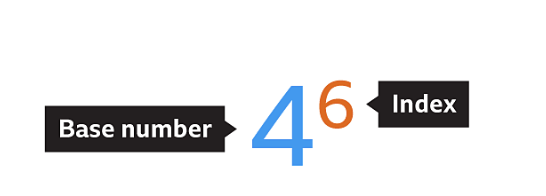
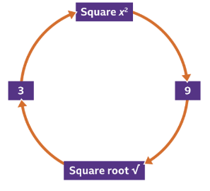

Powers
Powers is a shorthand way of writing a calculation using the same number.
For Example, instead of 4 * 4 * 4 you can write 43 which reads as 4 to the power of three.
Definition
A power is a repeated calculation of the number itself indicated by the exponent.
A power can also be known as an index or an exponent it's a small floating number or a letter above the number.

There is also negative exponents which means dividing the number.
For Example, 8-1 = 1⁄8 = 0.125.
Example 5-3 = 1⁄5 * 1⁄5 * 1⁄5 = 0.008 You can also write it this way. 5-3 = 1⁄5*5*5 = 1/53 = 1/125 = 0.008
What if it's 0? If 1 is the exponent then 91 = 9 and if the exponent is 0 then 90 = 1, 00 = 1
Examples
| Powers of 5 | ||
|---|---|---|
| 52 | 5*5 | 25 |
| 51 | 5 | 5 |
| 50 | 1 | 1 |
| 5-1 | 1⁄5 | 0.2 |
| 5-2 | 1⁄25 | 0.04 |
- Power: 23 = 2 * 2 * 2 = 8
- Root: 81/3 = 2
Powers Quiz
1. What is the value of 63?
Answer: 216
2. Which number represents the base number in 73?
Answer: 7
3. Which number represents the index number in 86?
Answer: 6
4. Write this in its simpler form 8*8*8*8*8 ?
Answer: 85
5. What is the value of 5-2?
Answer: 0.04
Roots
Definition
A root of a number is a value that, when multiplied by the exponent equals the original number.
Roots are reverse of a square so 52 = 25, √25 = 5
A cube root is the opposite of a cube, so 53 = 125, 3√125 = 5
Two negative numbers multiplied together equals a positive number. For Example, square root of 36 is 6 2. 36 also has a negative square root, since (-6) ² = 36.
the two roots of 16 are +4 and -4 could be written as ±4
The symbol for the square root is √. For example, √36 means 'the square root of 36'. The symbol √ refers to the positive square root, so √36 = 6
For cube roots, the symbol is 3√. For example, 3√27 means 'the cube root of 27'. The cube root of 27 is 3, since 33 = 27.

Roots Quiz
1. What is the square root of 36?
Answer: 6, The square root of 36 is 6, 62 = 6 x 6 = 36 Which means that √36 = 6
2. What is the square root of 81?
3, 27, 9
Answer: 9
3. What is the square root of+-64??
Answer: ±8
The square root of 64 is 8 because 82 = 8 * 8 = 64 and The square root of 64 is also -8 (because -82 = -8 x -8 = +64) This is usually written as ±8